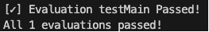
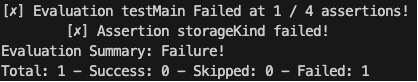
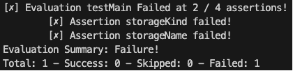

Bicep Testing Framework
Bicep is my goto IaC tools for deploying Azure Resources! I recently had a discussion with my team about validating deployments. Now validation is something I’m familiar with using Pester 😉. I remembered reading about bicep having an experimental feature for testing. I though I’d give it a try.
Just a quick heads up it still is in preview aka not ready for production 😁
Why validate?
Some times, you just want to be sure of the current state of a configuration. Is property value really set as I expect? Now you can look it up manually (I’d advice against that) or you could use code… Pester has saved me many of times… Let’s see if bicep can do the same…
Setting up bicep for testing
Enable assertions and testFramework
The bicep experimentalFeature needs to be enabled. You can do this by adding it to the bicepconfig.json file
{
"experimentalFeaturesEnabled": {
"testFramework": true,
"assertions": true
}
}
Create test.bicep to author test
I’m keeping it simple and just deploy a simple storageAccount, just to see what I’m working with…
test testMain 'main.bicep' = {
params: {
location: 'westeurope'
kind: 'StorageV2'
skuName: 'Standard_LRS'
storageAccountName: 'stBicepTest'
}
}
To author the test you use the test keyword, give it a name and a reference to the bicep file to test.
There are some limitations:
- You must pass in a parameter object, you cannot reference an existing parameter file currently
- Test blocks must be in a separate file from the .bicep template you want to test
- Test result output summary is not standardized
Author assert statements within the referenced bicep file
Now for the assertions. The assert statements can be any boolean expression that references parameters, variables, or resource names. These boolean expressions can include Bicep functions such as “contains()”, “length()”, etc.
param storageAccountName string = 'st${uniqueString(resourceGroup().id)}'
param location string = resourceGroup().location
param kind string = 'StorageV2'
param skuName string = 'Standard_LRS'
resource storageAccount 'Microsoft.Storage/storageAccounts@2019-06-01' = {
name: storageAccountName
location: location
kind: kind
sku: {
name: skuName
}
}
//Test expected values
assert storageKind = kind == 'StorageV2'
assert storageSkuName = skuName == 'Standard_LRS'
assert storageLocation = contains(location,'europe')
//Test expected naming convention
assert storageName = startsWith(storageAccount.name,'st')
output storageAccount object = {
name: storageAccount.name
id: storageAccount.id
kind: storageAccount.kind
skuName: storageAccount.sku.name
}
Here are some limitations you should know of:
- You can only assert on parameters, variables, and resource names with current functionality
- You cannot assert on resource size, location, or other propreties yet as these depend on runtime deployment functionality
Here is what that means for the following assertions:
//This won't work. It depends on runtime deployment fucntionality
assert storageSkuName = skuName == storageAccount.sku.name
//This is hardcore to validate only for 'Standard_LRS'
//Note: Look into bicep array functions
assert storageSkuName = skuName == 'Standard_LRS'
//This asserts if location is somewhere in europe
assert storageLocation = contains(location,'europe')
//Resource name starts with 'st'
assert storageName = startsWith(storageAccount.name,'st')
Run bicep test
The moment we’ve all waited for! To execute the test run the following:
bicep test bicep/test.bicep
It passed!

Ok, I was expecting each assertion in the test. I tried looking up if there was flag to expand the output… I didn’t find any. It’s experimental, so I can’t complain.
But what does a failed test looks like? I’m glad you asked!
test testMain 'main.bicep' = {
params: {
location: 'westeurope'
kind: 'StorageV1' //This should complain it's not 'StorageV2'
skuName: 'Standard_LRS'
storageAccountName: 'stBicepTest'
}
}
It failed!

storageKind assertion failed. The evaluation did metion that 1/4 assertions failed. Again I was expecting to see the ones that were succesful as well… I’m sure it’s a flag I don’t know about…
Let’s add one more failure
test testMain 'main.bicep' = {
params: {
location: 'westeurope'
kind: 'StorageV1' //This should complain it's not 'StorageV2'
skuName: 'Standard_LRS'
storageAccountName: 'slBicepTest' //StorageAccount name should start with 'st'
}
}

Ok! Both failed as expected!
Conclusion
The current bicep test functionality is more akin to validating parameters values and naming conventions. If your naming convention dictates that you storage account name starts with ‘st’ then sure by all means use it. What I’m really interested in, is validating after the deployment. Bicep test doesn’t support runtime deployment functionality at the moment.
I asked the community if it’s worth investing. Currently development is on hold. I’d agrue using pester might be a better fit for validating actual deployments! That will be for a next time 😉